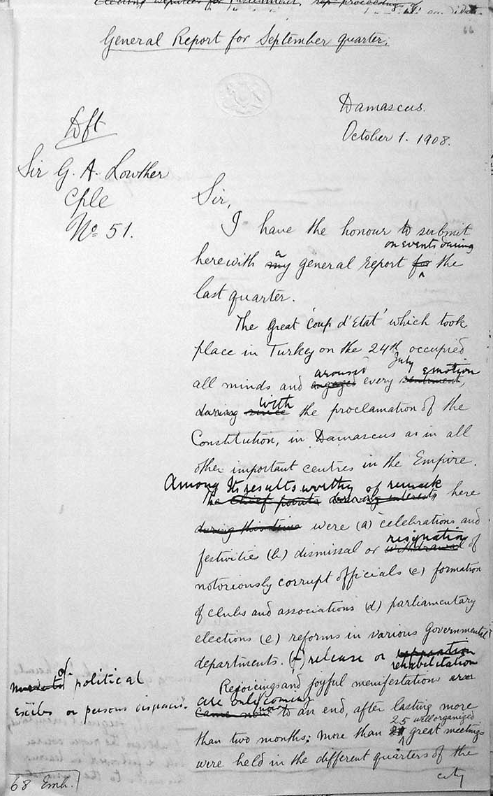
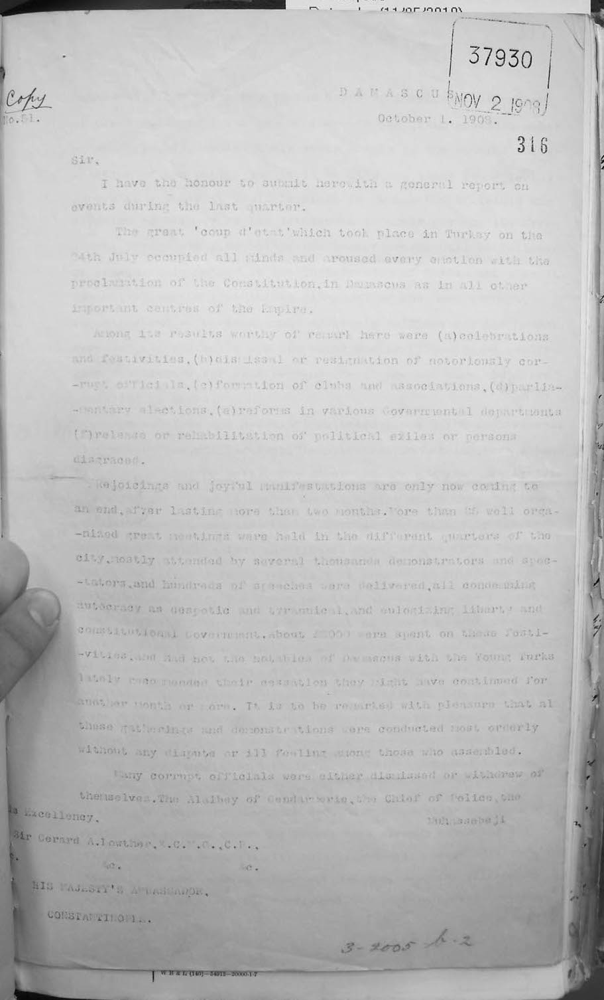
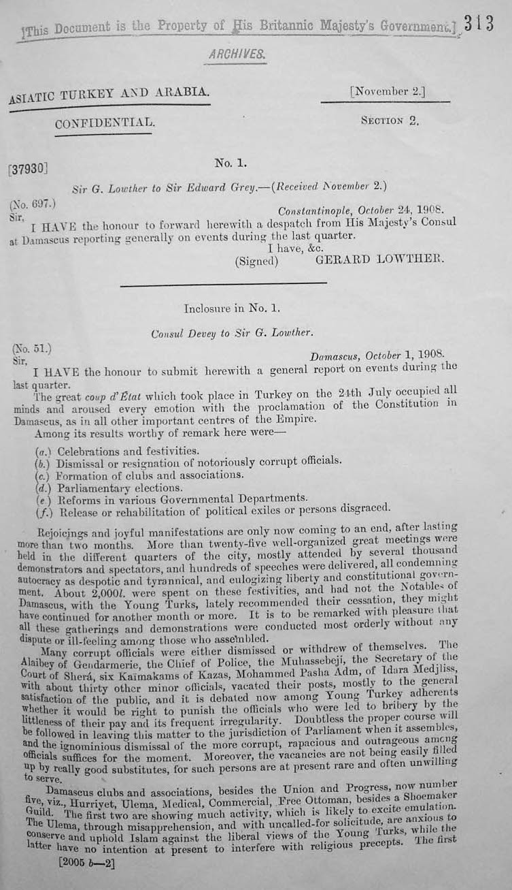
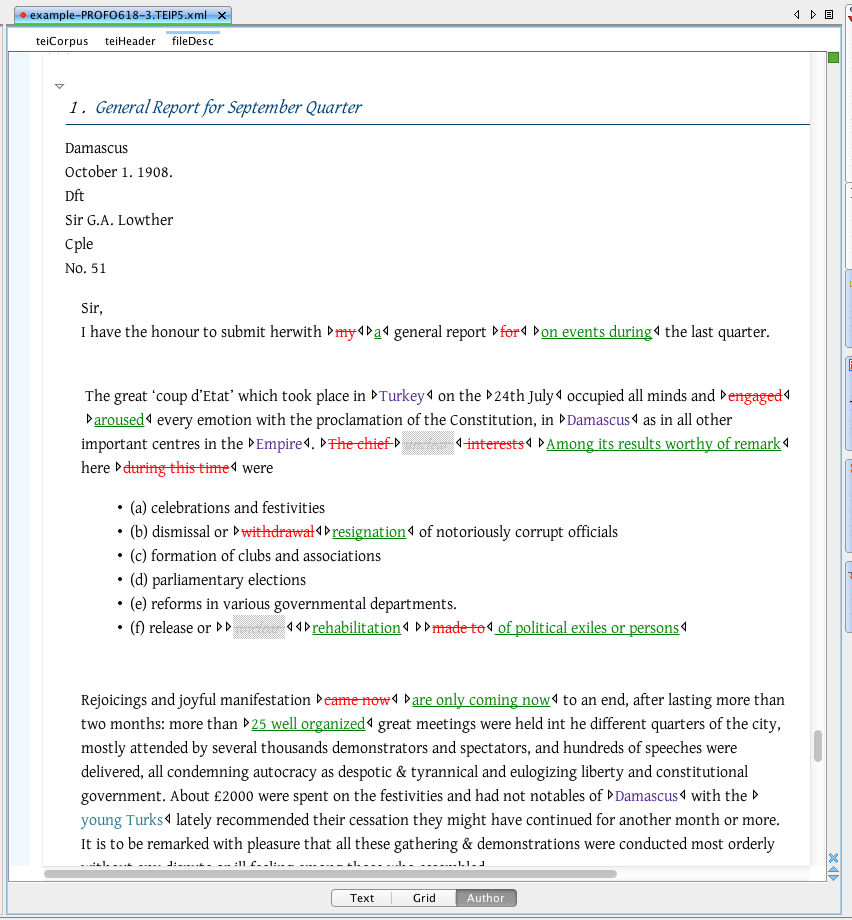

In order to talk about texts, markup and encoding of texts, we need to understand what we mean by these basic concepts.
When we talk about text encoding, what do we mean by a text? What is in a text and which assumptions do we make in reading them?
What is a text?
Is this text …
Damascus, Quarterly Report, Devey to Lowther 1 Oct. 1908
… the same as this text …
Damascus, Quarterly Report, Devey to Lowther 1 Oct. 1908
… the same as this text …
Damascus, Quarterly Report, Devey to Lowther 1 Oct. 1908
… the same as this text?
Damascus, Quarterly Report, Devey to Lowther 1 Oct. 1908
A text is not a document
Where is the text?
in the shape of letters and their layout?
in the original from which this copy derives?
in the stories we read into it?
or in its author’s intentions?
TEI’s definition:
A “document” is something that exists in the world, which we can digitize.
A “text” is an abstraction, created by or for a community of readers, which we can encode.
Encoding of texts
A text is more than a sequence of encoded glyphs or lexical tokens
It has a structure and a communicative function
It also has multiple possible readings
Encoding, or markup, is a way of making these things explicit
Only that which is explicit can be reliably found again and displayed
What is the point of markup?
To make explicit (to a machine) what is implicit (to a person)
To add value by supplying multiple annotations
To facilitate re-use of the same material
in different formats
in different contexts
by different users
We don’t have to be limited to the view of one editor or consumer
Styles of markup
In the beginning there was procedural markup: RED INK ON; print balance; RED INK OFF
which being generalised became descriptive or semantic markup: <balance type='overdrawn'>some numbers</balance>
also known as encoding or annotationdescriptive markup allows for easier re-use of data
Some more definitions
Markup makes explicit the distinctions we want to make when processing a string of bytes
Markup is a way of naming and characterizing the parts of a text in a formalized way
It’s (usually) more useful to markup what we think things are than what they look like
Separation of form and content
Presentational markup cares more about fonts and layout than meaning
Descriptive markup says what things are, and leaves the rendition of them for a separate step
Separating the form of something from its content makes its re-use more flexible
It also allows easy changes of presentation across a large number of documents
Markup as scholarly activity
The application of markup to a document can be an intellectual activity
In deciding what markup to apply, and how this represents the original, one is undertaking the task of an editor
There is (almost) no such thing as neutral markup – all of it involves interpretation
Markup can assist in answering research questions, and deciding what markup is needed to enable such questions to be answered can be a research activity in itself
Good textual encoding is never as easy or quick as people would believe
Detailed document analysis is needed before encoding for the resulting markup to be useful
Compare markup
Example 1:
<hi rend="dropcap">H</hi>&WYN;ÆT WE GARDE <lb/>na in gear-dagum þeod-cyninga <lb/>þrym gefrunon, hu ða æþelingas <lb/>ellen fremedon. oft scyld scefing sceaþe <add>na</add><lb/>þreatum, moneg<expan>um</expan> mægþum meodo-setl <add>a</add><lb/>of<damage><desc>blot</desc></damage>teah ...
Example 2:
<lg><l>Hwæt! we Gar-dena in gear-dagum</l><l>þeod-cyninga þrym gefrunon,</l><l>hu ða æþelingas ellen fremedon,</l></lg><lg><l>Oft Scyld Scefing sceaþena þreatum,</l><l>monegum mægþum meodo-setla ofteah;</l><l>egsode Eorle, syððan ærest wearþ</l>
<l>feasceaft funden...</l></lg>
A useful mental exercise
Imagine you are going to markup several thousand pages of complex material….
Which features are you going to markup?
Why are you choosing to markup this feature?
How reliably and consistently can you do this?
Now, imagine your budget has been halved. Repeat the exercise!
Some alphabet soup
abbr
expan
SGML
Standard Generalized Markup Language
HTML
Hypertext Markup Language
W3C
World Wide Web Consortium
XML
eXtensible Markup Language
DTD
Document Type Definition (or Declaration)
CSS
Cascading Style Sheet
Xpath
XML Path Language
XSLT
eXtensible Stylesheet Language - Transformations
XQuery
XML Querying
RELAXNG
Regular Expression Language for XML (New Generation)
SVG
Scalable Vector Graphics (expressed in XML)
… and then there’s also TEI, the Text Encoding Initiative
XML
Extensible Markup Language (XML) is a simple, very flexible text format derived from SGML (ISO 8879). Originally designed to meet the challenges of large-scale electronic publishing, XML also now plays an indispensible role in the exchange of a wide variety of data on the Web and elsewhere.
XML: what it is and why you should care
XML is structured data represented as strings of text
XML looks like HTML, except that:
XML is extensible
XML must be well-formed
XML can be validated
XML is application-, platform-, and vendor- independent
XML empowers the content provider and facilitates data integration
XML terminology 1
An XML document may contain:
processing instructions: e.g. <?xml version="1.0" encoding="UTF-8"?>
elements (also: node(), tags) wrapped in angled brackets: <node/>. Nodes can carry attributes and contain a mix of text() and child elements.
@attributes: describe specific qualities of the element’s content; attached to elements inside the angled brackets: <node attribute1="someValue" attribute2="someOtherValue"/>
text(): the content of a node; between the opening and closing element tag: <node>Some text including whitespaces etc.</node>
entity references: “escaped” characters; as & and < are special symbols, they cannot be used as they are but must be written as entity reference. All entity references start with & and end with ; E.g. &, ", <, >, '
CDATA: All text is parsed, but text in <![CDATA[]]>
namespaces
XML terminology 2
The data is encoded in Unicode (UTF-8 or UTF-16)
must be well-formed:
nodes can only nest,
all nodes/elements must be closed,
the document contains only a single root node
can be validated against schema(s)
can contain xml valid against different schemas if differentiated by namespaces
The rules of the XML Game
An XML document represents a (kind of) tree
It has a single root and many nodes
Each node can be
a subtree
a single element (possibly bearing some attributes)
a string of character data
Each element has a name or generic identifier
XML elements and attributes are case sensitive
Representing an XML tree
An XML document is encoded as a linear string of unicode characters
It begins with a special processing instruction
Element occurrences are marked by start- and end-tags
The characters < and & are Magic and must always be “escaped” if you want to use them as themselves, i.e. < and &
Comments are delimited by <!-- and -->
Attribute name=value pairs are supplied on the start-tag and may be given in any order, separated by spaces
Entity references (eg < for < or Ç for Ç) are delimited by & and ; CDATA sections are delimited by <![CDATA[ and ]]> (but we won’t use these here)
The xml namespace is used by the TEI for global attributes @xml:id and @xml:lang
Example: Kawkab America #55, 28 April 1893
<?xml version="1.0" encoding="UTF-8"?><div type="article" xml:lang="en"><head xml:lang="ar">الشرق في معرض <placeName>شيكاغو</placeName></head><head xml:lang="en">The orient at fair.</head><p>Is there anybody left in <placeName>Syria</placeName>, <placeName>Egypt</placeName>,
<lb/><placeName>Turkey</placeName>, <placeName>Morocco</placeName>, and the other countries
<lb/>of the Orient? Were the questions asked
<lb/>by officers at <placeName>Ellis Island</placeName> and the Orient
<lb/>als of <placeName>New York</placeName> within the last few
<lb/>weeks. The long expected concessioners,
<lb/>exhibitors and participants in the <orgName>World's
<lb/>Fair</orgName>, who for many days and weeks have
<lb/>been directing their footsteps from the
<lb/>various lands of the rising sun towards
<lb/>the "<q>new land of promise</q>" have arrived
<lb/>in large numbers, and set foot upon the
<lb/>soil of the new world which they have
<lb/>sought with feelings of high expectation,
<lb/>and an eagerness to which long distance
<lb/>had added many charms. The Sheikh
<lb/>who from childhood hours had learned to
<lb/>praise Allah for every blessing of life,
<lb/>must have shouted a hearty "<quote>Alhamduli
<lb/>la! and Allah<gap/> Kariem!</quote>" when after a
<lb/>journey of some weeks and months by
<lb/>land and by sea he saw in <placeName>New York</placeName> har
<lb/>bor the majestic form of the Goddess of
<lb/>Liberty with the beacon of light in her
<lb/>outstretched hand bidding him welcome
<lb/>to the "<q>home of the brave and the land of
<lb/>the free.</q>"</p></div>
<head xml:lang="ar">الشرق في معرض <placeName>شيكاغو</placeName></head><head xml:lang="en">The orient at fair.</head>
Example deconstructed: paragraph, quotes, and named entities
<p>Is there anybody left in <placeName>Syria</placeName>, <placeName>Egypt</placeName>,
<lb/><placeName>Turkey</placeName>, <placeName>Morocco</placeName>, and the other countries
<lb/>of the Orient? Were the questions asked
<lb/>by officers at <placeName>Ellis Island</placeName> and the Orient
<lb/>als of <placeName>New York</placeName> within the last few
<lb/>weeks. The long expected concessioners,
<lb/>exhibitors and participants in the <orgName>World's
<lb/>Fair</orgName>, who for many days and weeks have
<lb/>been directing their footsteps from the
<!-- ... --><lb/>had added many charms. The Sheikh
<lb/>who from childhood hours had learned to
<lb/>praise Allah for every blessing of life,
<lb/>must have shouted a hearty "<quote>Alhamduli
<lb/>la! and Allah<gap/> Kariem!</quote>" when after a
<!-- ... --><lb/>outstretched hand bidding him welcome
<lb/>to the "<q>home of the brave and the land of
<lb/>the free.</q>"</p>
XML syntax: the small print
What does it mean to be well-formed?
There is a single root node containing the whole of an XML document
Each subtree is properly nested within the root node
Element/attribute/etc. names are always case sensitive
Start-tags and end-tags are always mandatory (except there is a combined start-and-end tag, e.g. <pb/>)
Attribute values are always quoted
A file can be valid in addition to being well-formed. This means you obey the rules of a specified schema, such as the TEI.
Test your XML knowledge
Which are correct?
<seg>some text</seg><seg><foo>some</foo><bar>text</bar></seg><seg><foo>some <bar></foo> text</bar></seg><seg type="text">some text</seg><seg type='text'>some text</seg><seg type=text>sometext</seg><segtype="text"> some text <seg/><seg type="text"> some text<gap/></seg><seg type="text">some text</Seg>
XML is an international standard
XML requires use of ISO 10646 (also known as Unicode)
a 31 bit character repertoire including most human writing systems
encoded as UTF8 or UTF16
other encodings may be specified at the document level
language may be specified at the element level using @xml:lang
(The @xml:id attribute is another W3C-defined attribute.)
The TEI
The Text Encoding Initiative (TEI) is a consortium which collectively develops and maintains a standard for the representation of texts in digital form. Its chief deliverable is a set of Guidelines which specify encoding methods for machine-readable texts chiefly in the humanities, social sciences and linguistics.
1987 was a long time ago…
The Text Encoding Initiative was born into a very different world
the world wide web did not exist
the tunnel beneath the English Channel was still being built
a state called the Soviet Union had just launched a space station called Mir
serious computing was done on mainframes
most people didn’t have mobile phones
…but also a familiar problems
Corpus linguistics and ‘artificial intelligence’ had created a demand for large scale lexical resources in academia and beyond
Advances in text processing were beginning to affect lexicography and document management systems (e.g. TeX, Scribe, tRoff..)
The Internet existed and theories about how to use it ‘hypertextually’ abounded
Books, articles, and even courses in something called “Computing in the Humanities” were becoming commonplace
The birth of the Text Encoding Initiative
Spring 1987: European workshops on standardisation of historical data (J.P. Genet, M. Thaller )
Autumn 1987: In the US, the NEH funds an exploratory international workshop on the feasibility of defining “text encoding guidelines”
this resulted in the “Poughkeepsie principles”
Summer 1990: first draft (P1, with the ‘P’ standing for proposal ever since) of guidelines circulated
TEI is old!
So the TEI is very old!
It comes from a time before the Web, before the DVD, smart mobile phones, cable tv, the iPod, and even XML (which was finalised in 1998)!
Not much in computing survives 5 years, never mind 25
Why is it still here, and how has it survived?
What relevance can it possibly have today?
Why the TEI
The TEI provides
a language-independent framework for defining markup languages
a very simple consensus-based way of organizing and structuring textual (and other) resources…
… which can be enriched and personalized in highly idiosyncratic or specialised ways
a very rich library of existing specialised components
an integrated suite of standard stylesheets for delivering schemas and documentation in various languages and formats
a large and active open source style user community
Relevance
Why would you want those things?
because we need to interchange resources
between people
(increasingly) between machines
because we need to integrate resources
of different media types
from different technical contexts
because we need to preserve resources
cryogenics is not the answer!
we need to preserve metadata as well as data
The scope of intelligent markup
Even within the original scope of the TEI we have
basic structural and functional components
diplomatic transcription, images, annotation
links, correspondence, alignment
data-like objects such as dates, times, places, persons, events (named entity recognition)
meta-textual annotations (correction, deletion, etc) linguistic analysis at all levels
contextual metadata of all kinds
… and so on and so forth
Reasons for attempting to define a common framework
re-usability and repurposing of resources
modular software development
lower training costs
‘frequently answered questions’—common technical solutions for different application areas
The TEI was designed to support multiple views of the same resource. The TEI is an evolving model of the concerns of Digital Humanities.
TEI adopted XML
In 2002, the TEI consortium published the P4 Guidelines, which were essentially an adaptation of P3 to XML that had been finalised as W3C standard in 1998.
P5, a complete overhaul of the guidelines, was published in 2008. Updates are regularly published every couple of months ever since. The current version 2.8.0 was released on 6 April 2015.
The Guidelines are currently maintained as an open source project on the Sourceforge site http://tei.sf.net/, from which released and development versions may be freely downloaded.
TEI XML
all of XML.
In addition, TEI XML must be valid against the schema “TEI all”
this processing instruction means that the XML adheres to a specific schema, a set of conventions that tell the computer as well as the human reader about the structure of the element and the data to be expected at any given point in the document.
this provides interchangability and a certain degree of interoperability (the latter is often only theoretically applicable)
Note: namespaces vs schemas
a namespace is a way of identifying the provenance of a bunch of elements: a schema does the same, but it also specifies some rules about how those elements should be used.
a schema allows you to
ensure that your documents use only predefined elements, attributes, and entities
enforce structural rules such as ‘every chapter must begin with a heading’ or ‘recipes must include an ingredient list’
a namespace is just a URI; a schema is a formal specification written in a formal language
Conformance issues
A document is TEI Conformant if and only if it:
is a well-formed XML document
can be validated against a TEI Schema, that is, a schema derived from the TEI Guidelines
conforms to the TEI Abstract Model
uses the TEI Namespace (and other namespaces where relevant) correctly
is documented by means of a TEI Conformant ODD file which refers to the TEI Guidelines
or if it can be transformed automatically using some TEI-defined procedures into such a document (it is then considered TEI-conformable).
A final note on standardization
Standardization should not mean “Do what I do”, but rather “Explain what you do in terms I can understand”.
Instead of an abstract set of rules and norms, standardisation should be thought of as a community of practice.
Useful links / resources
the TEI Consortium’s website at http://www.tei-c.org/index.xml:
the TEI guidelines at http://www.tei-c.org/Guidelines/P5/
the TEI wiki at http://wiki.tei-c.org/: comprising inter alia TEI cheatsheets at http://wiki.tei-c.org/index.php/TEI_Cheatsheets.
Further resources provided by the TEI council and Oxford computing centre:
ROMA at http://www.tei-c.org/Roma/: customising TEI schemas for XML validation
OxGarage at http://oxgarage.oucs.ox.ac.uk:8080/ege-webclient/: online resource for conversion between common file formats, using TEI P5 as pivot format. Can be used to produce TEI P5 XML from a .docx file.
DHOxSS at http://digital.humanities.ox.ac.uk/dhoxss/: providing the material (including slides and exercises) for years of summer schools.
TEI Boilerplate at http://teiboilerplate.org/: a leight-weight solution for publishing styled TEI P5 content directly in modern web browsers.